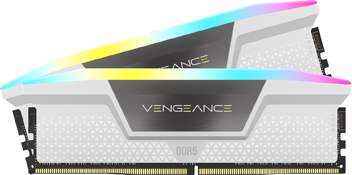
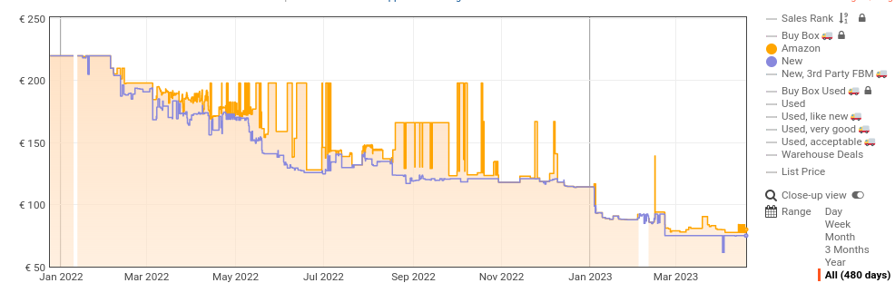
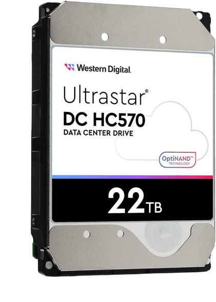

Bienvenue
Je m'appelle Arnaud et je suis étudiant en informatique. Je suis passionné de cela, surtout dans le domaine du hardware. Faire des configurations PC est une chose facile pour moi et que j'aime faire. J'aimerais donc les partager avec d'autres personnes afin que tout le monde puisse en profiter.
Le site :
J'ai réalisé ce site moi-même en HTML et CSS, il n'est donc pas parfait, mais je fais de mon mieux pour le tenir à jour et l'améliorer autant que possible. Si vous avez des idées d'amélioration, je vous invite à me contacter via la page "Mais encore..." que vous pouvez retrouver en cliquant ici. D'ailleurs, le site est hébergé chez moi, il se peut donc qu'il soit parfois déconnecté sans raison apparente.
Actualités
- La DDR5 baisse de prix
- On attend avec hâte Assassin's Creed Mirage !
- 22 To, c'est la capacité du plus gros disque dur achetable sur Amazon.fr
La DDR5 baisse de prix
En effet, c'était prévisible mais la DDR5 baisse de prix, enfin. Elle commence d'ailleurs à devenir plus intéressante que la DDR4.
Voici une photo montrant l'évolution de la courbe des prix d'une barrette de RAM Kingston FURY Beast 16Go 5600MT/s DDR5 CL40 sur Amazon.fr:
On peut constater une nette diminution des prix et c'est effectivement le cas puisque la barrette est passée de 219€ à 75€. Cependant les prix des modules mémoire sont susceptibles de baisser davantage en raison d'un niveau élevé de stocks résultant de la baisse des ventes de PC personnels et de serveurs en début d'année 2023. La DDR4 est sortie en 2014 et la DDR5 est bien plus puissante que celle-ci. Si vous possédez un PC de jeu équipé de DDR4, je vous conseille, d'ici l'année prochaine, de faire une petite mise à niveau en changeant la carte mère, le processeur (pour un modèle plus récent) et la RAM. Source : 01net.com Pour ce qui est des cartes mères qui les prennent, les prix baissent et remontent sans sens apparent.
Barrettes de RAM DDR5 intéressantes à mon goût :
- Pour les petits budgets : Kingston FURY Beast DDR5 16Go 4800MT/s CL38
- Le RGB et la rapidité : Corsair Vengeance RGB DDR5 32 Go (2x16 Go) 6400MHz CL32
On attend avec hâte Assassin's Creed Mirage !
Le jeu :
Le jeu offrira une plongée dans l'Histoire en permettant aux joueurs de découvrir une période spécifique. Cette fois-ci, ils auront l'opportunité de parcourir les rues de Bagdad durant l'âge d'or de l'Islam. Le jeu Assassin's Creed: Mirage marque un retour aux sources en termes de gameplay. En effet, après un virage radical pris par la série avec Origins en 2017, qui avait introduit un monde ouvert immense à explorer, des quêtes annexes foisonnantes et un aspect RPG développé, Mirage revient à une formule plus classique. Le jeu se déroulera dans une seule ville dense, où l'accent sera mis sur la verticalité, avec le retour du parkour, mis de côté dans les précédents jeux. L'aspect RPG sera abandonné, et les joueurs pourront améliorer leurs armes comme dans les anciens opus, mais ne pourront pas gagner d'expérience. En conséquence, la ville sera accessible en entier dès le début du jeu, sans zones verrouillées par des niveaux. À noter également que le héros sera prédéfini et que les joueurs ne pourront pas choisir leur sexe ni leur apparence, puisque le personnage principal sera Basim.
Le prix :
Le prix d'Assassin's Creed Mirage est surprenamment bas pour un nouveau jeu. Selon le site officiel d'Ubisoft, il est proposé à 49,99 euros en édition standard, quel que soit le support. Les précommandes incluent une quête bonus intitulée "Les 40 voleurs". Une édition Deluxe est également disponible au prix de 59,99 euros.
Et surtout, La date :
Assassin’s Creed Mirage est prévu pour sortir en 2023, bien que la date exacte n'ait pas été annoncée par le studio Ubisoft. Les jeux Assassin’s Creed sont généralement révélés quelques mois avant leur sortie, donc on peut s'attendre à une commercialisation dans les six premiers mois de l'année. Selon le site Insider Gaming de Tom Henderson, le jeu sortira en août 2023, ce qui serait une date inhabituelle pour la saga qui a tendance à privilégier la fin de l'année. Cependant, une fiche produit d'un revendeur polonais a indiqué une date de sortie différente, fixée au 30 juin 2023. Il reste donc à voir quelle sera la date de sortie officielle.
Source : phonandroid.com
22 To, c'est la capacité du plus gros disque dur achetable sur Amazon.fr
Vous et moi n'avons clairement pas besoin d'autant de stockage mais les entreprise ou même imaginons les gros youtuber en ont plus d'utilité. Si 22 Tera octets vous parraissent beaucoup, apprenez que j'était déçu et m'attendait à plus cepandant cette complexité qu'est de faire des disque dur avec autant d'espace de stockage est du au fait que ceux-ci stock physiquement les donnée sur des disques (pour ceux qui veulent voici comment fonctionne un disque dur) et donc que il est dur d'augmenter l'espace de stockage sans augmenter sa taille, ce qui ne peut être imaginé dans la mesure où les normes de tailles de disque existe depuis déjà bien longtemps et qu'on n va pas demander à tout les constructeurs de boitier de changer ceux-ci dans le seul but de pouvoir mettre de plus gros HDD, surtout à l'heure des Ssd.
Voici le plus gros disque que j'ai trouvé sur amazon.fr, sa capacité de stockage est de 22To.
et voici le lien pour ceux que ça interresse : WD Ultrastar HC570 WUH72222ALE6L4 22TB
Il s'agit d'un western digital et sa vitesse de rotation de plateaux est de 7200RPM. Les prochains gros disque dur qui devrait arriver sur le marché devrait être de 30 To d'après 01net et même de 60 en 2026.